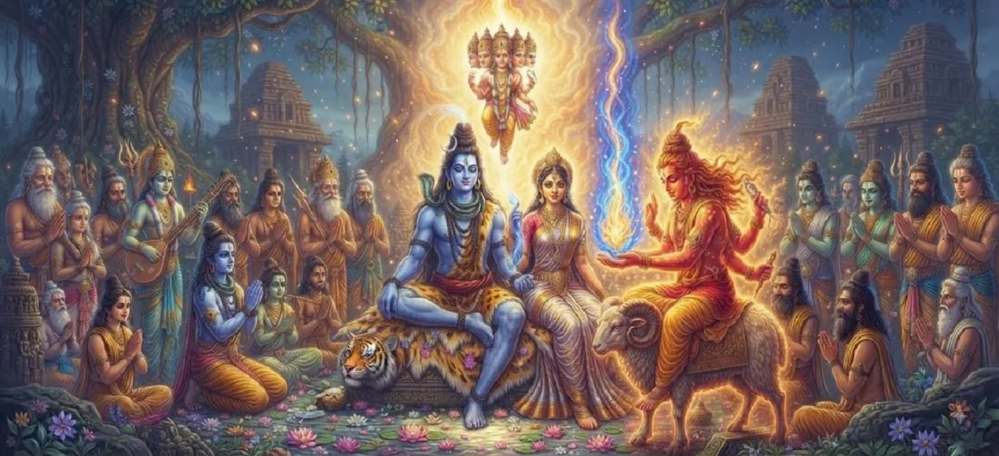

Agni Receives Shiva’s Seed
The eighth chapter of the Kumara Khanda details the pivotal moment when Agni, the god of fire, steps forward to receive and bear the blazing supreme Tejas of Lord Shiva.
This monumental act marks a crucial step in the cosmic mission to manifest the divine commander who will vanquish the demon Tārakāsura.
Chapter 8 Highlights
Agni’s Valor
The fire god volunteering to bear the divine seed.
Acceptance of Tejas
Absorbing the tremendous radiance of Lord Shiva.
Divine Form
Approaching the sacred presence under divine guidance.
Cosmic Relief
The universe finding momentary reassurance as transmission occurs.
Fulfillment of Duty
Carrying out the ordinance of the Supreme Lord.
Path to Next Phase
Setting the stage for Agni's subsequent journey.
Core Topics in This Chapter
- 01Agni Steps Forward to Receive the Tejas→
- 02Instructions and Guidance from Lord Shiva→
- 03The Magnificent Transfer of the Supreme Seed→
- 04Agni Testing His Capacity to Bear the Flame→
- 05Rejoicing of the Deities Over the Successful Transfer→
- 06The Onset of Intense Heat within Agni→
- 07Transition to Chapter 9 (Agni Seeks Relief)→
Agni Steps Forward to Receive the Tejas
At the behest of Lord Brahma and the assembled deities, Agni volunteers to take on the daunting task of receiving and carrying the brilliant seed of Lord Shiva.
His inherent fiery nature makes him the only logical candidate for this mission.
Instructions and Guidance from Lord Shiva
Lord Shiva imparts specific instructions on how the Tejas is to be approached and absorbed, ensuring that the cosmic balance remains undisturbed during the transfer.
Agni listens with absolute devotion and readiness.
The Magnificent Transfer of the Supreme Seed
In a breathtaking display of divine energy, the supreme Tejas is successfully transferred into Agni, filling him with a celestial radiance that transcends ordinary fire.
The heavens witness this awe-inspiring event with deep reverence.
Agni Testing His Capacity to Bear the Flame
Initially, Agni feels invigorated by the divine spark, taking pride in serving as the guardian of the future savior of the worlds.
However, the sheer magnitude of Shiva's potency begins to test his limits.
Rejoicing of the Deities Over the Successful Transfer
Seeing that Agni has successfully received the seed, Brahma, Indra, and the other gods express immense joy and relief, knowing that the divine plan is progressing smoothly.
Pmrayers and praises echo through the celestial abodes.
The Onset of Intense Heat within Agni
As time passes, the intense heat of Shiva's divine seed grows increasingly overwhelming even for the god of fire, setting the stage for his subsequent quest for relief.
The fiery burden demands a new course of action.
Transition to Chapter 9 (Agni Seeks Relief)
Overpowered by the unbearable warmth of the divine Tejas, Agni prepares to seek a way to alleviate his burning condition, leading directly into the next chapter.
The journey of the divine seed continues toward its destined receptacle.
Key Teachings of Chapter 8
Willing Service
Stepping up to carry divine responsibilities with courage.
Potency of Tejas
The supreme energy of Shiva surpasses all ordinary standards.
Endurance Tested
Even celestial beings face limits when handling absolute power.
Collective Hope
Successful cooperation among gods yields cosmic progress.
Sequential Evolution
Every phase of the divine mission unfolds with profound purpose.
Divine Devotion
Obeying cosmic ordinances ensures ultimate victory over evil.
Spiritual Reflection
Agni's willingness to receive Shiva's seed illustrates that true strength involves taking on difficult duties for the greater good. However, it also teaches us that even powerful agents need proper outlets when carrying immense burdens.
Living the Message of Chapter 8
Accept necessary responsibilities with courage and a selfless attitude.
Acknowledge your personal limitations when dealing with overwhelming stress or tasks.
Trust in the orderly progression of higher cosmic and life plans.
Key Spiritual Concepts
The formal reception of Lord Shiva's supreme seed by Agni.
The divine transmission of blazing energy from source to bearer.
The collective rejoicing of the celestial community.
The intense and mounting heat experienced by the carrier.
The successful execution of essential cosmic missions.
The sacred duty of serving divine objectives for universal welfare.
Chapter Summary
Kumara Khanda Chapter 8 chronicles Agni stepping forward to receive Lord Shiva's blazing seed, successfully carrying the Tejas while experiencing its intense and mounting heat.
Frequently Asked Questions
1. What is the primary focus of Kumara Khanda Chapter 8?
Chapter 8 focuses on Agni, the god of fire, stepping forward to receive and carry the blazing supreme seed (Tejas) of Lord Shiva.
2. Why is Agni chosen to receive the divine seed?
As the deity personifying fire and heat, Agni possesses the unique resilience needed to bear the intense spiritual radiance and energy of Lord Shiva.
3. How does Agni take on this divine burden?
Agni approaches under divine guidance, successfully absorbing the magnificent Tejas into his own form as requested by the supreme deities.
4. What is the next chapter after Chapter 8?
The next chapter is titled 'Agni Seeks Relief'.
“When courage meets divine trust, even the most intense burdens are embraced for the ultimate salvation of the universe.”
Continue Through Kumara Khanda
Chapter 8 explores Agni receiving Shiva’s seed. Continue to the next chapter, Agni Seeks Relief.